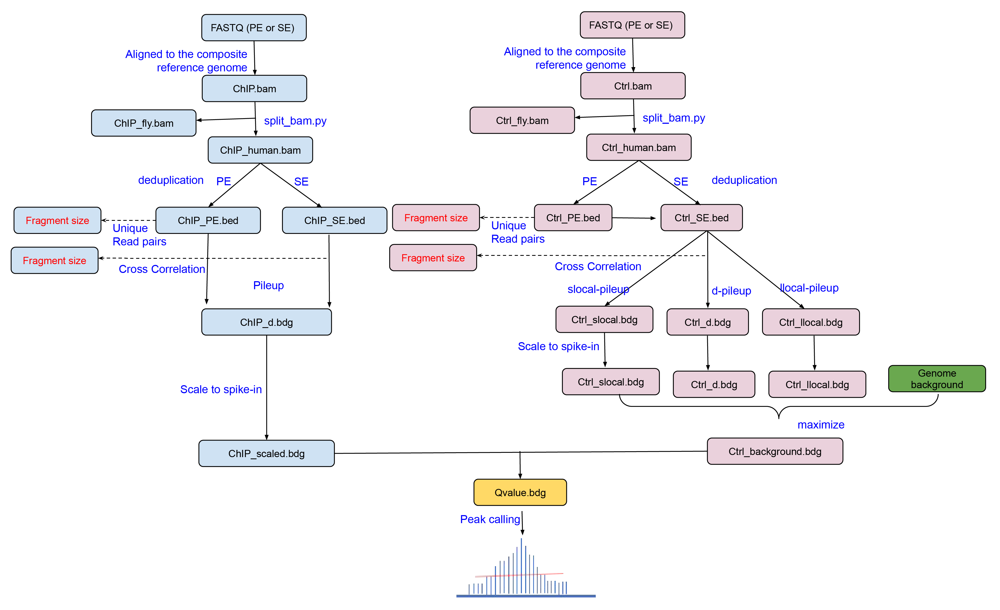

1. Analysis workflow¶
Spiker is specifically designed to analyze ChIP-seq data with spike-in control.
{kind=link}
2. Input and output¶
The input files can be single-end or paired-end FASTQ files or pre-aligned BAM files. It supports both narrow peak (such as H3K27ac) and broad peak analysis (such as H3K79me2 in this tutorial).
Input single-end fastq files
$ spiker.py --t1 H3K27ac.fastq.gz --c1 control.fastq.gz --bt2-index /data/GRCh38 --spikeIn --csf 1.23 --tsf 0.95 -o H3K27ac
$ spiker.py --broad --t1 H3K27ac.fastq.gz --c1 control.fastq.gz --bt2-index /data/GRCh38 --spikeIn --csf 1.23 --tsf 0.95 -o H3K27ac
Input paired-end fastq files
$ spiker.py --t1 H3K27ac_R1.fastq.gz --t2 H3K27ac_R2.fastq.gz --c1 control_R1.fastq.gz --c2 control_R2.fastq.gz --bt2-index /data/GRCh38 --spikeIn --csf 1.23 --tsf 0.95 -o H3K27ac
$ spiker.py --broad --t1 H3K27ac_R1.fastq.gz --t2 H3K27ac_R2.fastq.gz --c1 control_R1.fastq.gz --c2 control_R2.fastq.gz --bt2-index /data/GRCh38 --spikeIn --csf 1.23 --tsf 0.95 -o H3K27ac
Input BAM files
$ spiker.py -t H3K27ac.sorted.bam -c control.sorted.bam --spikeIn --csf 1.23 --tsf 0.95 -o H3K27ac
$ spiker.py --broad -t H3K27ac.sorted.bam -c control.sorted.bam --spikeIn --csf 1.23 --tsf 0.95 -o H3K27ac
Output files
3. Spiker.py options¶
- Options:
- --version
show program’s version number and exit
- -h, --help
show this help message and exit
- --t1=CHIP_R1
FASTQ file (read1) for ChIP sample. Can be regular plain text file or compressed file (.gz, .bz2). Mutually exclusive with ‘-t’.
- --t2=CHIP_R2
FASTQ file (reas2) for ChIP sample. Can be regular plain text file or compressed file (.gz, .bz2). Mutually exclusive with ‘-t’. Ignore this for single- end sequencing.
- -t CHIP_BAM, --treat=CHIP_BAM
BAM file of ChIP sample. The BAM file must be sorted and indexed. Mutually exclusive with ‘–t1’ and ‘– t2’.
- --c1=CTRL_R1
FASTQ file (read1) for Control sample. Can be regular plain text file or compressed file (.gz, .bz2). Mutually exclusive with ‘-c’.
- --c2=CTRL_R2
FASTQ file (reas2) for Control sample. Can be regular plain text file or compressed file (.gz, .bz2). Mutually exclusive with ‘-c’. Ignore this for single- end sequencing.
- -c CTRL_BAM, --control=CTRL_BAM
BAM file of Control sample. Mutually exclusive with ‘ –c1’ and ‘–c2’. The BAM file must be sorted and indexed.
- -o OUTFILE, --output=OUTFILE
Prefix of output files.
- --bt2-index=BT2_INDEX
The prefix (minus trailing .X.bt2) for bowtie2 index files. Ignore this option if BAM files were provided by ‘-t’ and ‘-c’.
- -n N_READS
Number of alignments from the BAM file used to tell the sequencing layout (PE or SE), and estiamte the fragment size ‘d’. default=1000000
- -g G_SIZE, --genome-size=G_SIZE
Effective genome size. It can be 1.0e+9 or 1000000000, or shortcuts:’hs’ for human (2.7e9), ‘mm’ for mouse (1.87e9), ‘ce’ for C. elegans (9e7) and ‘dm’ for fruitfly (1.2e8). default=hs
- -p N_THREADS, --proc=N_THREADS
Number of threads. default=8
- --mfold=M_FOLD
Select the regions within MFOLD range of high- confidence enrichment ratio against background to build model. Fold-enrichment in regions must be lower than upper limit, and higher than the lower limit. Use as “-m 10 30”. DEFAULT:5 50
- --spikeIn
Set this flag if ChIP and control samples contains exogenous reads as splike-in. Please note, you also need to specify –tsf and –csf.
- --tsf=TREAT_SF
Scaling factor for treatment. This will be applied to the pileup bedgraph file of treatment (*.treat.pileup.bdg).
- --csf=CONTROL_SF
Scaling factor for control. This will be applied to the pileup bedgraph file of maximum background (*.control.pileup.max.bdg).
- --q-peak=Q_CUTOFF
Qvalue cutoff for peaks. default=0.05
- --q-link=Q_LINK_CUT
Qvalue cutoff for linking regions. default=0.1
- --bw
If set, generate bigwig files for ChIP pileup and control pileup.
- --maxgap=MAX_GAP
maximum gap between significant points in a peak. default=100
- --broad
If set, call broad peaks.
- --frip
If set, calculate FRiP (the Fraction of Reads In called Peaks) score using the BAM and peak files.
- --cleanup
If set, clean up the intermediate files. When not set, intermediate files are kept so that rerun the workflwo will be much faster.
- --refine
If set, detect peak summit position.
- --verbose
If set, print detailed information for debugging.
4. split_bam.py options¶
- Options:
- --version
show program’s version number and exit
- -h, --help
show this help message and exit
- -i BAM_FILE
BAM file of the composite genome (such as human + fly)
- -o OUT_PREFIX, --output=OUT_PREFIX
Output prefix. The original BAM file will be split into four BAM files: ‘prefix_human.bam’, ‘prefix_exogenous.bam’, ‘prefix_both.bam’, ‘prefix_neither.bam’.
- -p CHR_PREFIX, --exo-prefix=CHR_PREFIX
Prefix added to the exogenous chromosome IDs. For example. ‘chr2L’ -> ‘dm6_chr2L’. default=dm6_
- -q MAP_QUAL, --mapq=MAP_QUAL
Mapping quality (phred scaled) threshold. Alignments with mapping quality score lower than this will be assigned to ‘prefix_neither.bam’. default=30
- --threads=N_THREAD
Number of threads to use for BAM sorting. default=1